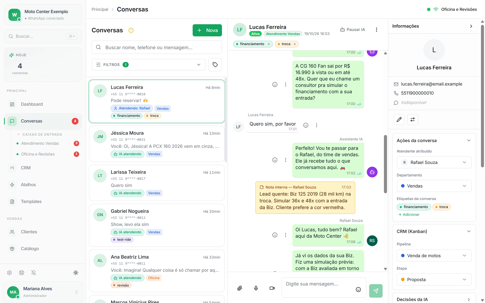
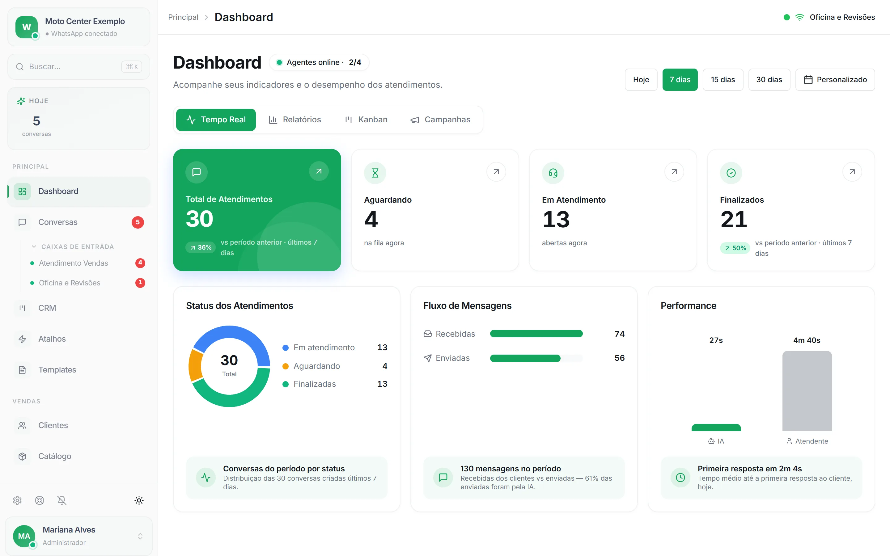
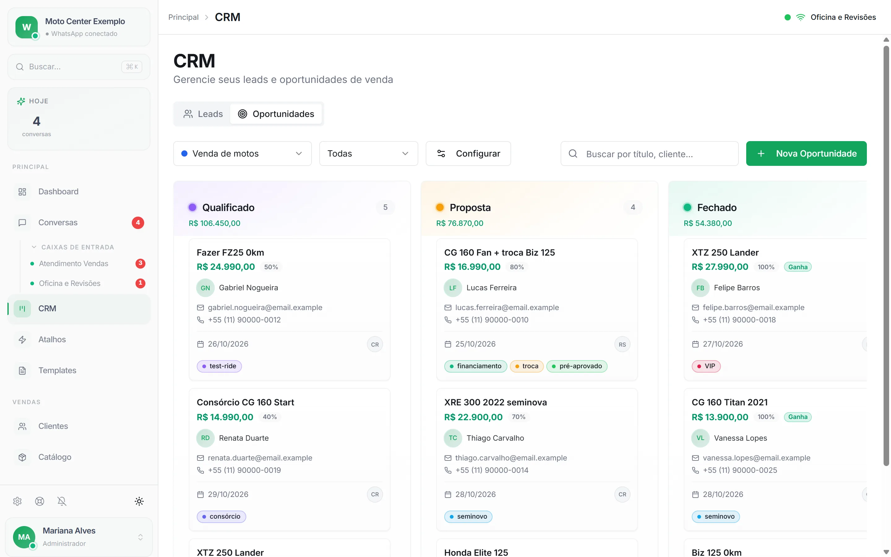
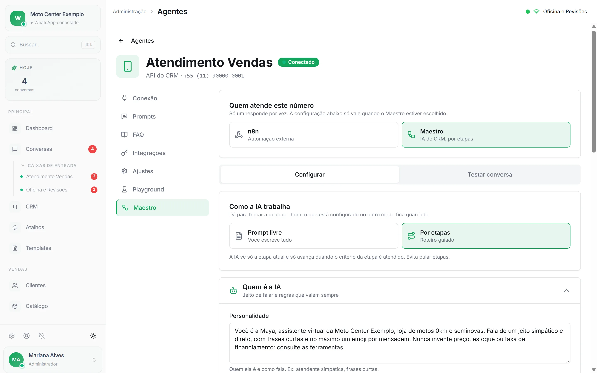
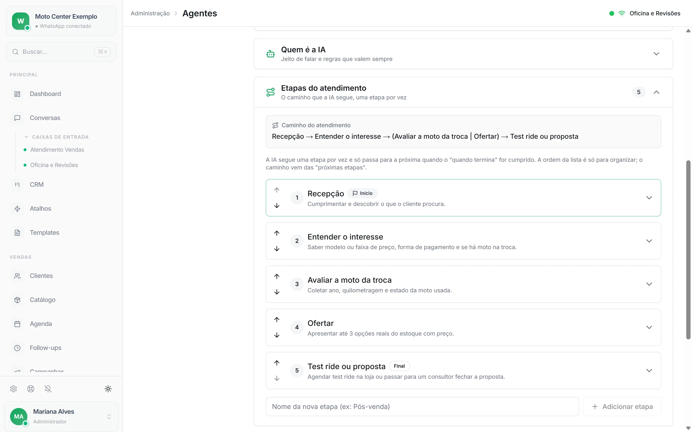
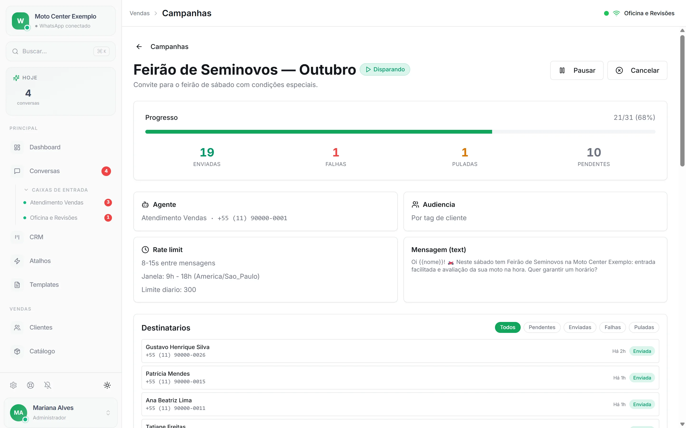
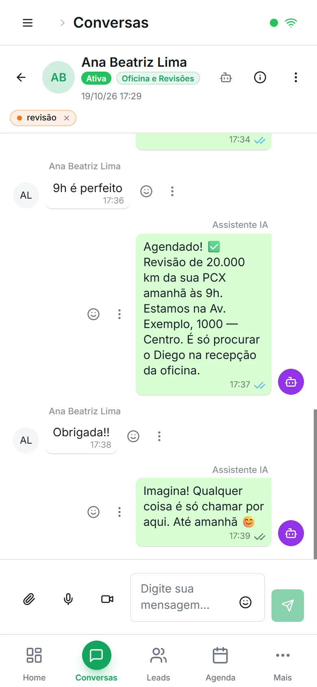

Estudo de caso 01 · SaaS próprio
Maya CRM
Plataforma multi-empresa que centraliza o atendimento por WhatsApp, com caixa de entrada da equipe, funil de vendas e agentes de IA que respondem, agendam e consultam o CRM sozinhos.







O problema
Pequenas e médias empresas atendem clientes por vários números de WhatsApp, sem histórico compartilhado, sem distribuição entre atendentes e sem métricas. Quando alguém sai de férias, as conversas somem junto.
O Maya junta tudo numa caixa de entrada por empresa, coloca um agente de IA no primeiro atendimento e deixa a equipe assumir quando precisa. O gestor acompanha o funil e os indicadores no mesmo lugar.
O que construí
- Caixa de entrada em tempo real com transferência entre atendentes, notas internas, reações e lista virtualizada.
- Funil kanban com pipelines e etapas, mais um funil de oportunidades com conversão de leads.
- Agentes de IA por canal, com biblioteca de prompts, base de conhecimento e um playground para testar antes de publicar.
- Campanhas de disparo em massa com limite de envio, janela de horário por fuso e opt-out automático quando o cliente responde "SAIR" ou "PARAR".
- Agendamentos integrados ao Google Calendar, com lembretes e follow-ups automáticos.
- Painel da plataforma com empresas, usuários, personificação para suporte e consumo de tokens de IA por empresa.
- Uma vertical para restaurantes com reservas, eventos com inscrição e pesquisa pós-visita classificada automaticamente.
Decisões técnicas
Um adaptador por provedor de WhatsApp
UazAPI, Evolution (Baileys), Meta Cloud API e Covercut ficam atrás da mesma interface. Um único webhook identifica de qual provedor veio a mensagem, então trocar de provedor não mexe no resto do sistema.
Filas para tudo que pode falhar
12 workers BullMQ cuidam de mensagens de entrada e saída, mídia, transcrição, campanhas e turnos do agente. Um lock distribuído no Redis impede que dois workers respondam à mesma conversa, e os workers podem rodar num serviço separado do app.
Agente com ferramentas, não só chat
O motor de agentes monta o prompt da etapa em que a conversa está e roda um laço entre o modelo e as ferramentas: agenda, CRM, produtos, base de conhecimento e chamadas HTTP. Aceita modelos da OpenAI, do Google e da Anthropic, transcreve áudio com Whisper e pode responder por voz.
MCP com OAuth 2.1
Um servidor MCP somente leitura deixa o gestor consultar o CRM direto pelo Claude. Tem registro dinâmico de cliente, refresh token rotativo e escopo isolado por empresa.
Isolamento entre empresas com teste
Toda consulta é filtrada pela empresa do usuário, com testes específicos contra acesso a recurso de outra empresa (IDOR). Chaves de API são guardadas com hash, credenciais com criptografia AES e webhooks validados por HMAC.
Tempo real sem polling
Server-Sent Events com fan-out por Redis pub/sub, para que várias instâncias do app entreguem o mesmo evento à tela certa.
Da ideia ao produto
A primeira versão foi um protótipo no Lovable com Supabase, bom para validar telas com clientes. Quando o produto precisou de filas, vários provedores de WhatsApp e banco próprio, reescrevi tudo em Next.js 15 com Prisma e PostgreSQL.
A mesma base hoje roda com variações por cliente, como a da Wyarp, com campanhas e motor de agentes, e a vertical para restaurantes.
Em números
Stack
- Next.js 15
- React
- TypeScript
- Prisma 7
- PostgreSQL 16
- pgvector
- NextAuth 5
- BullMQ
- Redis
- Tailwind
- shadcn/ui
- Zod
- PWA
- Jest
- Docker Swarm
- Traefik